Детский мастер-класс
2 200 ₽
Записаться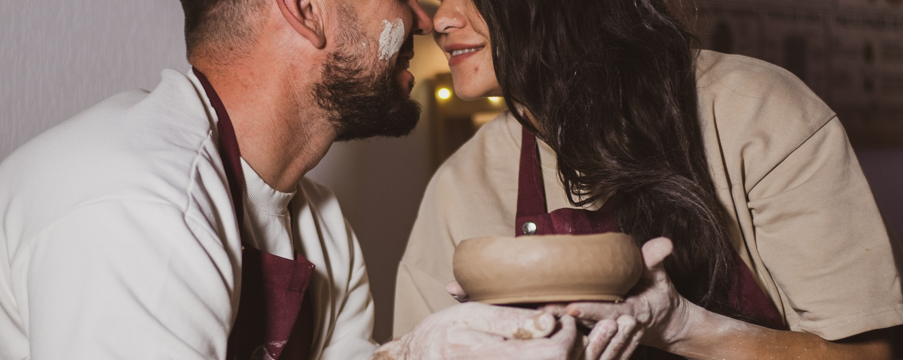
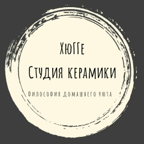
студия керамики · краснодар
Философия домашнего уюта: гончарный круг, чай, печеньки и винил. Лепишь и расписываешь ты — обжигаем мы. Уходишь со своей вещью.
кто встречает у порога
Хозяйка студии — Ксения Копарник, краснодарка с красноярскими корнями. В пандемию она потеряла родителей и пересмотрела профессию: полгода провела в коммуне ремесленников — гончары, мыловары, роспись по дереву.
Так появилась мастерская «ХюГГе»: первые гости пришли в феврале 2024, а уже через месяц поток был такой, что пришлось искать место побольше. С мая 2024 студия живёт на Седина, 164 — и Ксения окончательно уволилась из клиники, где работала раньше.
В марте 2026-го позвонили из министерства экономики края: студию внесли в Реестр креативных индустрий. А ещё здесь случаются благотворительные мастер-классы — например, в поддержку птиц мазутного побережья Анапы.
— Ксенияу нас — гости,
а не клиенты
лепка руками
Ничего не нужно уметь — мастер покажет, как посадить глину и что делать руками. В детский формат включено: лепка небольшого изделия + декор и роспись ангобами.
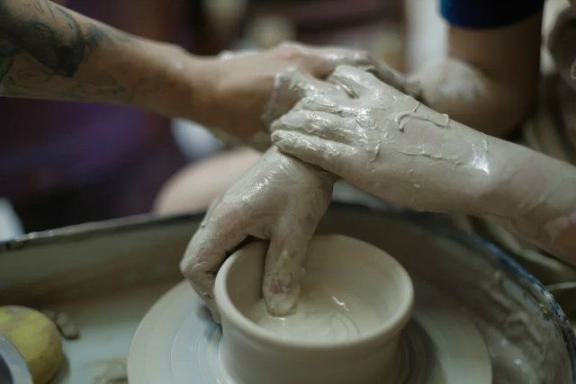
руки на круге — так выглядит процесс
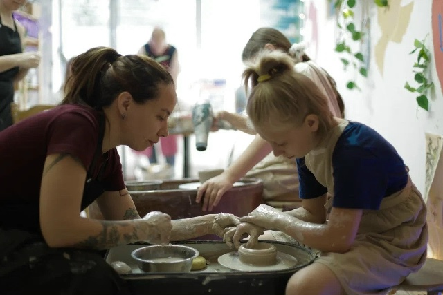
детский мастер-класс за кругом
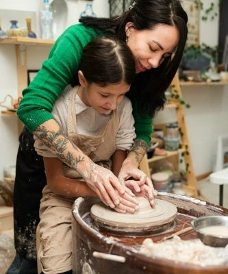
инструктор и юный гость
гончарный круг
Круглый диск, мокрая глина и руки мастера поверх твоих. Самое романтичное, что можно сделать с грязными руками.
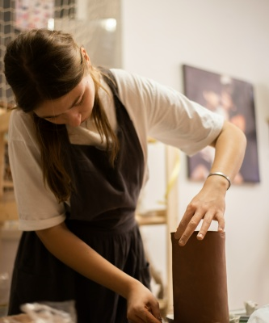
лепка вазы на круге — взрослый процесс
ангобы · глазури · винил
в студии играет проигрыватель — а пластинки мы ещё и расписываем
а ещё: дни рождения и корпоративы — обсуждаем по телефону.
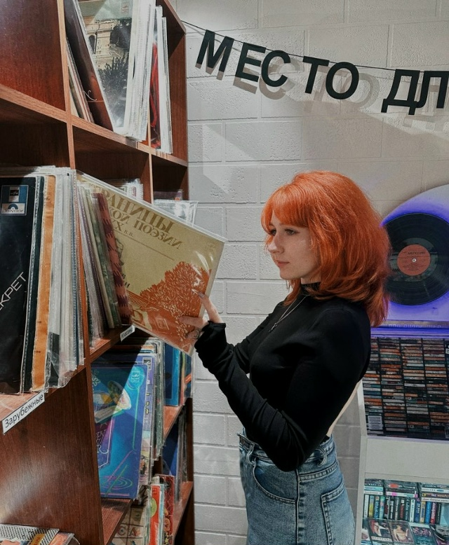
виниловая зона: пластинки на стеллаже
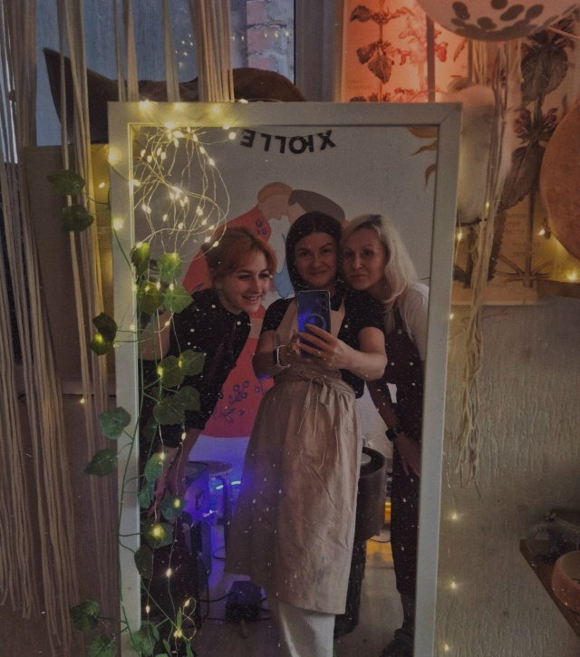
девичник у зеркала с гирляндой — вечерний режим
стол мастера: глазури и готовые кружки — а дальше всё это уходит в печь ↓
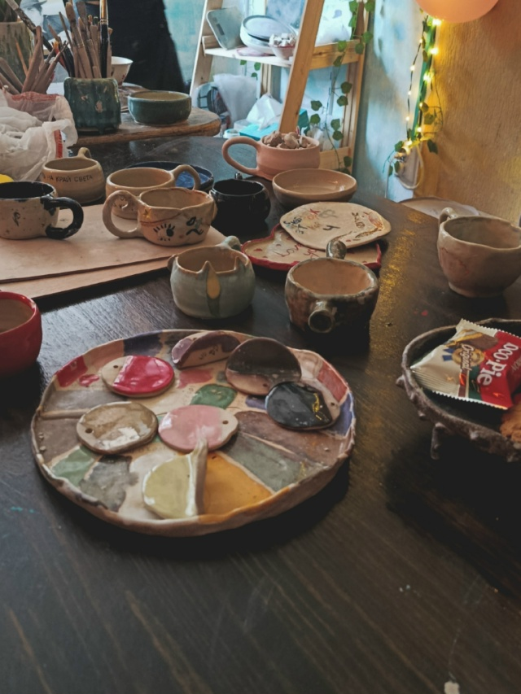
тихая станция
Изделие сохнет, уходит в печь, получает глазурь — тихая работа, которой не видно. Ты уходишь домой налегке, а мы доводим вещь до готовности.
Когда всё будет готово — забираешь свою вещь домой. Сроки зависят от изделия: точное скажет мастер при записи.
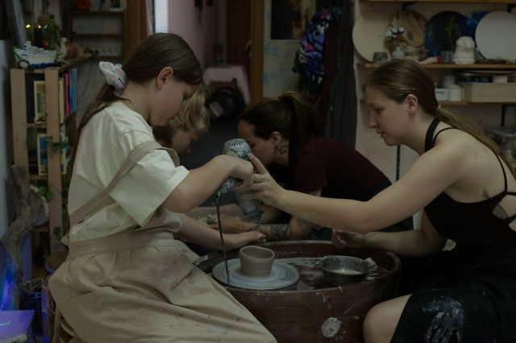
полки, инструменты и вечерний свет мастерской
в наличии и на заказ
Керамические чашки и кружки, расписные тарелки, лепные фигурки — то, что сделали гости и мастера. Что-то можно купить сразу, что-то заказать.
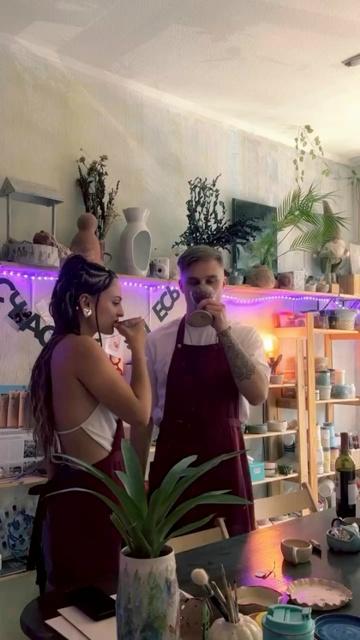
полки вдоль стен и гирлянда под потолком — так выглядит дом
гости говорят
Сегодня у нас с мужем годовщина свадьбы. Посетили студию керамики ХюГГе. До сегодняшнего дня никогда не были в таком месте. Получили нереальный восторг. Эмоции переполняют. Было тепло, уютно, романтично
Ирина С. — гончарное свидание, отзыв на Яндекс.Картах
Чай, печеньки и угощение — как всегда. Записываем по телефону, в WhatsApp и в сообщениях ВК.
Краснодар · ул. Митрофана Седина, 164 · 2 этаж
вход под вывеской «оригами», рядом детская площадка · запись по телефону и в ВК